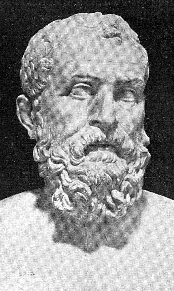
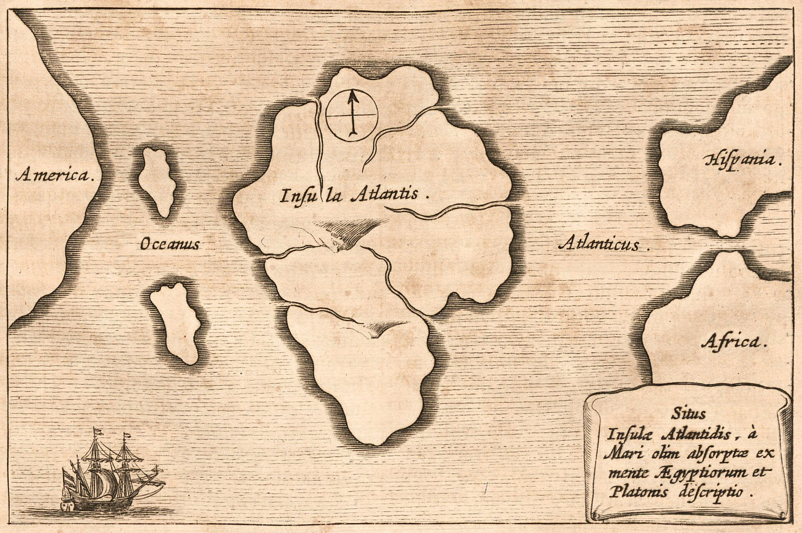
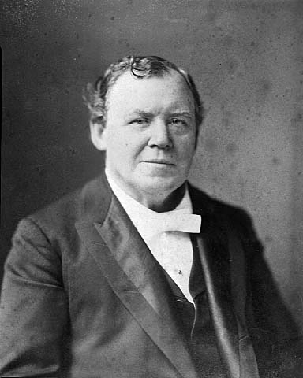

600 BC
Solon heard it

360 BC
Plato wrote it

AD 1678
Kircher mapped it

AD 1882
Donnelly sold it
"...an island beyond the pillars..."
"...a lost super-civilization!"
OR SO THE STORY GOES
LEGENDS VS RECORDS · NEW SHORT EVERY DAY